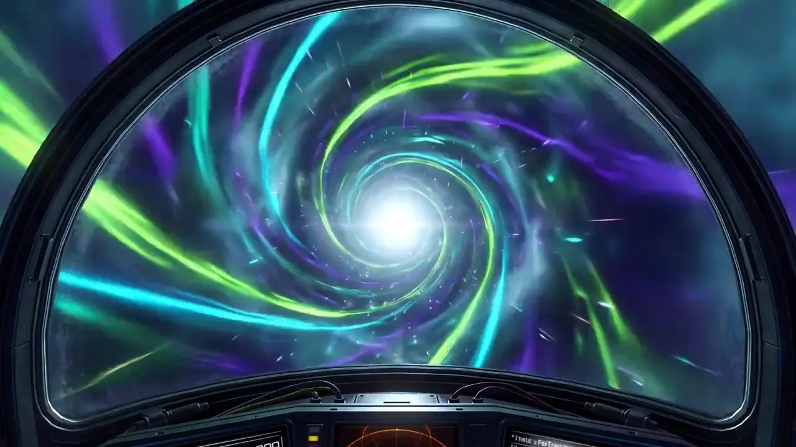

Source Material
- Live Resin
- Fresh-frozen flower harvested and immediately frozen to preserve terpenes and cannabinoids at peak freshness
- Distillate
- Dried and cured flower or trim processed through multiple refinement stages to isolate cannabinoids

You must be at least 21 years of age to view this site. Please verify your age to continue.
You must be 21 or older to enter this site.
Licensed by NY Office of Cannabis Management · Adult-Use Retail · 994 Atlantic Ave, Brooklyn, NY 11238 · Adults 21+ Only
Field Notes / Concentrates
Two of the most popular cannabis extract types take completely different approaches. One preserves the plant. The other refines it down to pure THC. Here is everything you need to know.
Live resin is made from fresh plant material that is flash-frozen at harvest, preserving the full terpene and cannabinoid profile for rich, strain-specific flavor and a full-spectrum, entourage character. Distillate is highly refined into a nearly pure, high-potency cannabinoid oil that is flavorless unless terpenes are re-added.
Live resin is a cannabis concentrate made from flower that was flash-frozen immediately after harvest, before any drying or curing takes place. This freezing step preserves the full spectrum of terpenes and cannabinoids that would otherwise degrade during the traditional drying process.
The frozen plant material is then extracted using hydrocarbon solvents (typically butane or a butane-propane blend) at very low temperatures. The result is a concentrate that captures the chemical profile of the living plant more faithfully than any other extraction method.
Distillate is a highly refined cannabis extract produced through a process called fractional distillation. Dried and cured cannabis (sometimes trim or lower-grade material) undergoes initial extraction, then is repeatedly refined using heat and vacuum pressure to isolate specific cannabinoids.
The result is an extremely pure, potent oil that is almost entirely THC (or CBD, depending on the target compound). The distillation process strips away terpenes, flavonoids, and other plant compounds, leaving a clear to light amber, viscous liquid with a neutral taste.
A detailed comparison across seven key categories.
| Attribute | Live Resin | Distillate |
|---|---|---|
| Process | Flower flash-frozen at harvest, then cold hydrocarbon extraction | Dried/cured material refined through fractional distillation |
| Terpenes | 5-10% naturally preserved from the living plant | Near zero after distillation; sometimes re-added afterward |
| Flavor | Full, strain-specific, aromatic | Flavorless and neutral unless terpenes are re-added |
| Potency (THC) | Typically 55-75% | Typically 85-95% |
| Typical Price (0.5g cart) | About $40-60 (a 30-50% premium) | About $25-40 (the more economical option) |
Live resin typically costs 30-50% more than comparable distillate products. This premium reflects the more expensive extraction process, the requirement for fresh-frozen starting material, and the lower overall yield.
Distillate is the more economical option on a per-gram and per-milligram-of-THC basis. Because the process can use lower-quality starting material and achieves higher THC concentrations, the production cost is lower and the savings are passed to the consumer.
For vape cartridges specifically, a 0.5g live resin cart might run $40-60 while a comparable distillate cart might cost $25-40. Whether the premium is worth it depends entirely on how much you value flavor and the full-spectrum experience versus raw THC potency and cost efficiency.
The right choice depends on what you prioritize. There is no objectively better option.
Both live resin and distillate sold in New York dispensaries must pass the same rigorous testing standards set by the Office of Cannabis Management. This includes:
At the dispensary, look for these clues to identify which type you are looking at:
Live resin is made from flower that is flash-frozen at harvest, so it retains the plant's full terpene profile and a wide range of cannabinoids for a flavorful, full-spectrum extract. Distillate is highly refined through fractional distillation into a nearly pure cannabinoid oil that is very potent but flavorless unless terpenes are re-added afterward.
Distillate typically tests higher in THC, often 85-95%, because the refinement process strips away nearly everything except the target cannabinoid. Live resin usually falls around 55-75% THC because it retains terpenes and other plant compounds alongside the THC. Higher lab potency does not necessarily mean a stronger reported experience for every person.
Live resin generally costs about 30-50% more than comparable distillate. The premium reflects the need for fresh-frozen starting material, cold-temperature extraction, more careful handling, and lower overall yield. Distillate can use lower-grade material and reaches higher concentrations, making it the more economical option per gram.
Pure distillate has almost no terpenes because they are removed during distillation, which is why unflavored distillate tastes neutral. Many distillate vape cartridges list 'botanical terpenes added' or 'cannabis-derived terpenes added,' meaning flavor compounds were blended back in after extraction to restore aroma and taste.
Check the product label, which will state 'live resin' or 'distillate' explicitly. Live resin products tend to highlight a specific strain name and natural terpene data, while distillate carts often note 'terpenes added.' Live resin also usually carries a higher price point. When in doubt, ask a budtender, who can point out the difference on the shelf.
Live menu · 994 Atlantic Ave
Adults 21+ with a valid government-issued photo ID. Open daily 10AM–10PM at 994 Atlantic Ave.